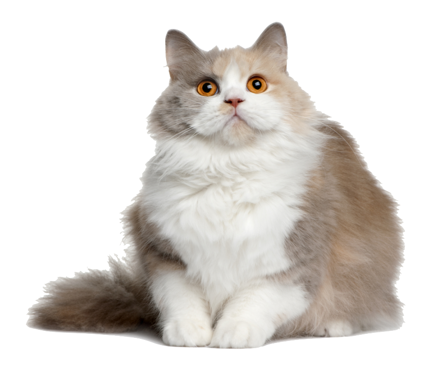

Domestic Cat
at, (Felis catus), also called house cat or domestic cat, domesticated member of the family Felidae, order Carnivora,
and the smallest member of that family. Like all felids, domestic cats are characterized by supple low-slung bodies, finely molded heads, long tails that aid in balance, and specialized teeth and claws that adapt them admirably to a life of active hunting. Cats possess other features of their wild relatives in being basically carnivorous, remarkably agile and powerful, and finely coordinated in movement.
Relationship with Humans :
Felis catus has had a very long relationship with humans. Ancient Egyptians may have first domesticated cats as early as 4,000 years ago. Plentiful rodents probably drew wild felines to human communities. The cats' skill in killing them may have first earned the affectionate attention of humans. Early Egyptians worshipped a cat goddess and even mummified their beloved pets for their journey to the next world—accompanied by mummified mice!
Cultures around the world later adopted cats as their own companions.
Communication :
Cats communicate by marking trees, fence posts, or furniture with their claws or their waste.
These scent posts are meant to inform others of a cat's home range. House cats employ a vocal repertoire that extends from a purr to a screech.
Diet :
Domestic cats remain largely carnivorous, and have evolved a simple gut appropriate for raw meat. They also retain the rough tongue that can help them clean every last morsel from an animal bone (and groom themselves). Their diets vary with the whims of humans, however, and can be supplemented by the cat's own hunting successes.
